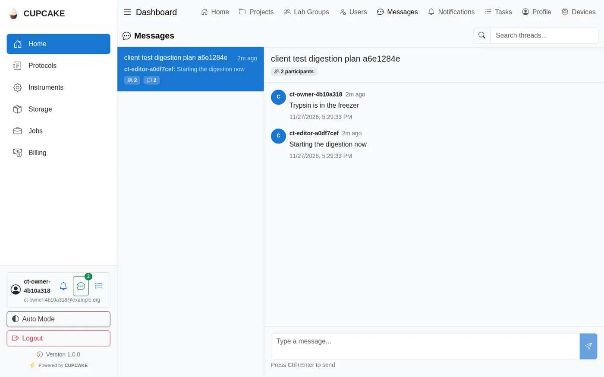
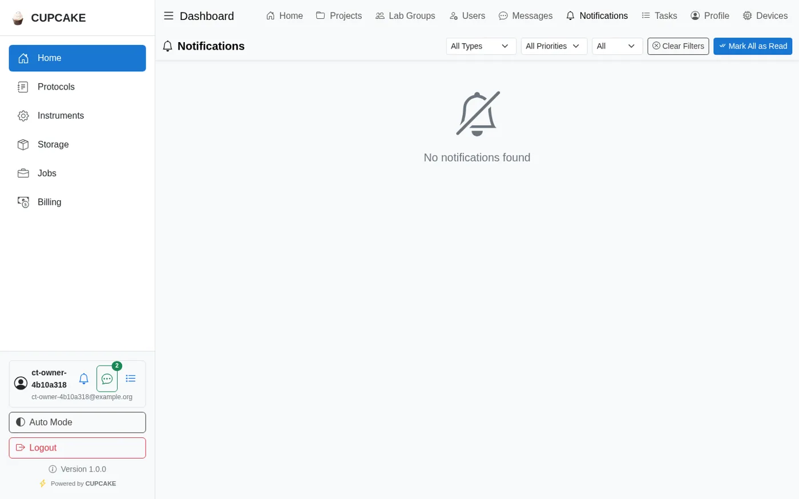

Messages
Messages lists your message threads; selecting one shows its messages. Type a message and press Ctrl+Enter to send it.

Notifications
Notifications lists what Cupcake has told you, such as low stock, maintenance due and booking changes, by type, priority and whether you have read them. Mark All as Read marks them all.
